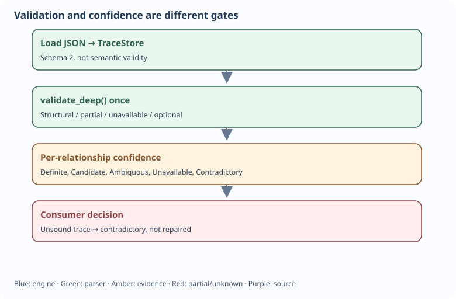

44 · TP-5 · Deep structural validation #
Key terms #
| Term | Plain meaning |
|---|---|
| Structural corruption | A contradiction: for example, a claimed realloc predecessor conflicts with the recorded creation event. |
| Partial coverage | A legitimate missing stretch, such as a crash or exhausted recording limit. Partial does not automatically mean corrupt. |
>
Level 1 · Intuition #
A JSON file can have the right shape and still contradict itself. TP-5's opt-in deep validation checks cross-record relationships. It distinguishes a corrupt link from a legitimate missing observation: a crashed or truncated program can yield a structurally sound but incomplete trace.


Level 2 · Architecture #
validate_deep() runs a list of consistency checks and collects the results in a ValidationReport. Each finding says where a problem was found, what kind it was, and how often it occurred. There are four important kinds: StructuralCorruption means records contradict one another; PartialCoverage means some intended observations are missing; UnavailableEvidence means a particular link cannot be supported; OptionalAbsence means an optional source of information is not there. is_structurally_sound() means there was no contradiction. It does not promise that all instructions, processes or bytes were captured. is_partial() asks a separate question about missing coverage. TP-6 runs this check once when you ask for its validated view. If structural contradictions exist, it refuses to give definite semantic confidence, while leaving raw records visible for investigation.
The checks ask practical questions: Do referenced snapshots and instructions exist? Are recorded stops in the required order? Do the counts agree? Are two different heap blocks claiming the same lifetime ID? Does a pointer marked address_only incorrectly claim a definite allocation origin? Does a trace claim all child processes were observed without evidence? The validator also checks static metadata links and whether reports agree with their stated coverage. For example, a pointer address inside block 7 is not enough to justify a claim that block 7 created that pointer. Older traces may simply lack a provenance or process-scope field: that means unavailable, not “the parser has filled it in.”
Realloc link verification #
A block's realloc_from_id is not enough. realloc_link compares indexed creation events of both new and predecessor identities with lifetimes: Reallocated must name the exact old ID; PID, order, allocation/free sequence and direction must agree. Self-links, cycles and explicitly conflicting events are structural contradictions even if history is partial. Missing corroboration receives UnavailableEvidence; an observed link in incomplete scope cannot become definite. glibc's realloc(ptr,0) terminal-free same-ID/null-address/zero-size event ends a lifetime but is not new lifetime creation. No address equality decides a predecessor. Heap lifetimes explains the source events.
Level 3 · Report and import example #
let store = TraceStore::open(path, TraceLoadOptions::default())?;
let report = store.validate_deep(); // explicit; not called by TraceStore::open
for finding in report.findings() {
eprintln!("{} at {}: {}", finding.code, finding.location, finding.detail);
}
if report.is_partial() { /* retain the usable prefix, display missing scope */ }This is a body excerpt; use the executable sample for imports. src/trace_parser/validation.rs::{validate_deep, validate_heap, validate_heap_process_coverage, validate_pointer_reference, realloc_link} implements checks. The resulting ValidationReport borrows no input JSON and aggregates occurrences by code; first_location_findings() on a TP-7 checkpoint is not a completeness proof for that checkpoint. TraceStore::from_trace intentionally remains schema-only.
Example findings #
| Code | Class | Correct response |
|---|---|---|
REALLOC_LINK_CONTRADICTORY | Structural | Preserve raw import for investigation; never claim definite predecessor |
POINTER_HEAP_PROVENANCE_CONTRADICTORY | Structural | Do not promote an address-only candidate |
HEAP_PROCESS_COVERAGE_UNSUPPORTED | Structural | Reject claimed all-descendant completeness |
HEAP_HISTORY_INCOMPLETE | Partial | Preserve observed events; downgrade history-dependent confidence |
REALLOC_LINK_UNVERIFIED | Unavailable | Do not infer missing event/lifetime data |
SANITIZER_REPORT_UNRECORDED | Optional | Absent report is not proof of no bug |